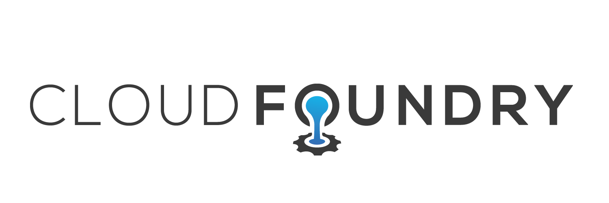

Cloud Foundry Summit 2015 Berlin
On the 2nd and 3rd November in 2015, the Cloud Foundry Foundation held the Cloud Foundry Summit in Berlin. The focus of this conference is on Cloud Foundry itself and the community around it.
ITQ (my employer) is focussing on Cloud Native apps and let a small group including myself attend the conference. After a canceled flight due to fog and a 650km roadtrip with my co-workers Ronald and Ruurd we arrived at the hotel at 2am in morning just in time for the first workshop.
In a nutshell, Cloud Foundry is a (full open source!) platform-as-a-service that enables companies to rapidly evolve their software through simple and fast deployments that take minutes instead of days. This approach does come with some catches, monolithic applications (ie: the really big enterprisey apps) are not well suited for this platform, instead, software systems should be written as a group of stateless 12-factor micro-services (Cloud Native apps) that work together to form the system.
I participated in one of the workshops on the first conference day that took us through the steps of deploying and managing microservice-based applications on the Cloud Foundry platform. The platform in this case being the Pivotal Cloud Foundry platform which has a web GUI to manage things as well as a command-line interface. You can play around with the platform yourself using the 60-day free trial Pivotal offers.
The second conference day was filled with talks about all things Cloud Foundry. BOSH, continuous integration and containers. Even Windows Azure was part of the fun.
As a software developer I found that most of the talks we're a bit more on the Ops side of the DevOps philosophy focusing on how the platform itself handles things and how to manage it. I hoped there would be a few talks that zoomed in on how micro-service apps run on the platform. How you write proper cloud native apps using stuff like Spring Cloud and why 12 factor matters so much if you want to become a cloud native organisation. It was still a very valuable experience and I'm very happy I was there to enjoy everything.
One thing stood out above the rest to my developer brain. Continuous integration/delivery. Automating your tests/deployments is a very good thing to have, but Cloud Foundry will let you really take it to the next level. As mentioned above, the platform and software methodology will let you deploy REALLY fast en VERY often, so often in fact, that could deploy straight into production if you wanted to. This is made possible because of speed and ease of deploying new things, but also because the platform can do all this without downtime! Something turned out not so great? No problem, just deploy a new fixed version of the misbehaving app and you're good to go again.

I think Cloud Foundry is a very cool product that can have a very positive effect on how a company develops and delivers their software and services. On the flip side there is a very big hurdle, companies that are building monoliths right now might not be so eager to abandon their current strategy and switch to micro-services and Cloud Foundry. The reason for this is that it is not just a technical change. Cloud Foundry has impact on a broader scale. Changing the way teams are set up and work together, getting rid of waterfall (or even worse, waterscrumfall) and becoming truly agile. That can seem daunting and would take quite some convincing to make an entire company switch.
I'd say the right path is to start very small. Build some non-critical things on the platform and show others inside the company how great it is. With enough interest and directly seeing the benefits, a company can gradually grow into this new way of building and delivering software.
I had a very good time a the summit, despite the lack of focus on micro-service development and look forward to playing around with the platform some more and hopefully an actual project that involves Cloud Foundry!